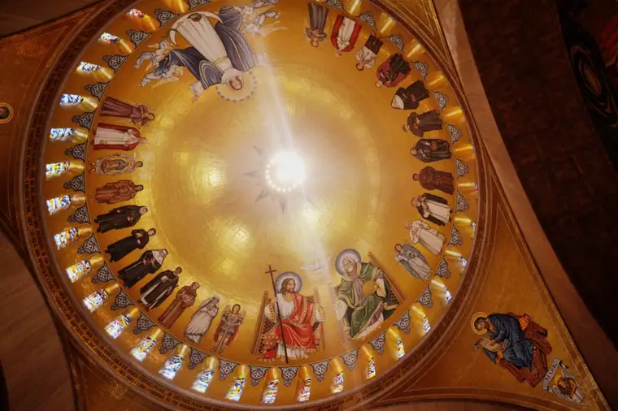

At the 10th hour, I was asked to serve as a chaperone for Shanley High School’s 2022 March for Life in D.C., and eagerly participated my fourth trip to the capitol to join the throngs of those speaking out for life in this 49th year since the infamous Roe vs. Wade decision, which codified abortion in our land throughout pregnancy.
But at the 11th hour, our trip was cancelled due to the enormity of obstacles that had presented themselves, and we were called to pray from home.
As I heard the opening speakers at the rally before the march on Real Presence Radio, my heart swelled. I could feel the energy, the excitement, the zeal for life.
The prior evening, the Catholics for Choice group had stolen into the night, projecting pro-abortion views in messages illuminated by lights onto the exterior of the Basilica of the National Shrine of the Immaculate Conception.
A Tweet from a group representative explained: “We projected on the Basilica in DC because we know that most Catholics support reproductive healthcare. If you’re a fellow pro-choice Catholic/person of faith, join us by speaking out & sharing your story,” adding the hashtags, “#LiberateAbortion,” and “AbortionIsEssential.”
In an attached video, the rep is standing across the street from the basilica, the slogans flashing onto the sacred structures behind her, as she gives an impassioned plea: “We are here tonight to lift up the majority of Catholics in the United States who support abortion rights and do not want to see Roe vs. Wade struck down.” (My emphasis.)
She said people who’ve had abortions are sitting in the pews, speaking from the lectern, and teaching Sunday school. “Abortion is part of the life of the Church,” she said, “and we are so tired of the clergy and the rightwing stigmatizing women and people who’ve had abortions. We need to start listening to them.”
The woman got it partially right. The post-abortive are part of our community, but they are part of the wounded of our community seeking reconciliation and redemption, not sitting proudly in their sin. Yes, we need to start listening to them, and we have been doing so. Hear some of these stories at https://silentnomoreawareness.org/.
Thankfully, those deeds done in the dark were a paltry act when placed next to the tremendously lively, positive pro-life march that followed, in the light, the next day, and the rally preceding it.
One of the keynote speakers, Fr. Mike Schmitz from the Diocese of Duluth, shared the story of a woman named Helen who walked away from her beloved job as a nurse in 1973 when her hospital started performing abortions. He later revealed that the woman was his maternal grandmother, and how much that decision had impacted her and her entire family line.
Fr. Mike said each of our lives matter, indicating that what we do for life – whether making a hard decision like his grandmother did, marching with thousands of others to prayerfully protest abortion, or standing on the streets of our city to offer hopeful alternatives for those seeking it – also matters.
He also shared of someone in an unplanned pregnancy situation whom he’d counseled 12 years ago who ended up completing the pregnancy, even when all her family and friends had advised she “just get rid of it,” and recalled how he’d assured her that her baby mattered and she was already a mother.
“She said, ‘I thought I hated my baby, and all these many years later I realized I didn’t hate my baby. I hated the circumstances in which I found myself…I was ashamed of myself,’” he relayed. She offered a suggestion to Schmitz for his D.C. address: “They need to know that my son is a gift from God himself.”
“That willingness to stand, that willingness to walk,” Schmitz followed, “it has echoed into my life; into the life of that young woman; and it is incarnate in the life of this 12-year-old boy, who wouldn’t be here if my Grandma Helen hadn’t stood…hadn’t walked.”
“Every child matters. Every woman matters. Every person matters,” he concluded. “Your being here standing, your being here walking, it changes you. And you matter.”

The words projected onto the basilica that night have now disappeared, and as the Archbishop of Washington, Cardinal Wilton Gregory, proclaimed: “The true voice of the Church was only to be found” within the basilica that evening.
“There, people prayed and offered the Eucharist, asking God to restore a true reverence for all human life” he wrote in a statement. “Those whose antics projected words on the outside of the church building demonstrated by those pranks that they really are external to the Church, and they did so at night. John 13:30.”
[Note: I write about my experiences on the sidewalk Downtown Fargo on Wednesday, the day abortions happen at our state’s only abortion facility, for New Earth magazine — the official news publication of the Fargo Diocese. I hope you find “Sidewalk Stories” helpful in understanding the truth about abortion and how it plays out tragically each week here in Fargo, N.D. The preceding ran in New Earth’s Feb. 2022 issue.]